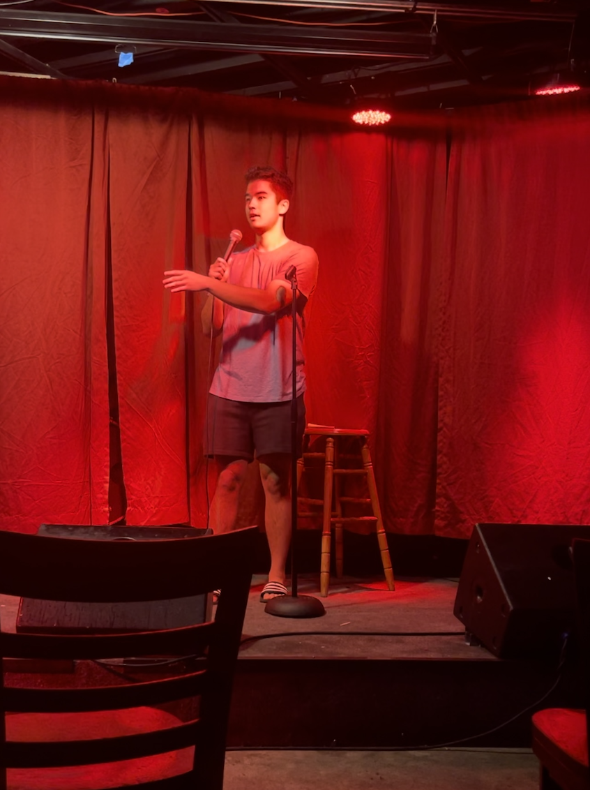
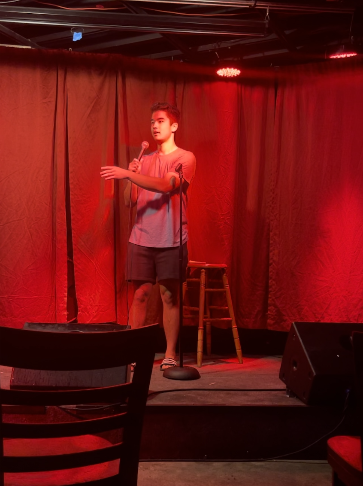

# gallery
# ---------------------------------
 

# inspo
# ---------------------------------
This web-design was adopted by that of manas kulkarni. Here's what he had to say:
"this website is largely adapted from the ps70 documentation website created by kalos chu. additionally, it draws inspiration from paul graham's personal website. when asked why he wastes screen space by making the text on his site so narrow, he answers, 'the aim of web design is not to use all available screen space. it is legibility. text is most legible with no more than 70 characters per line.'"